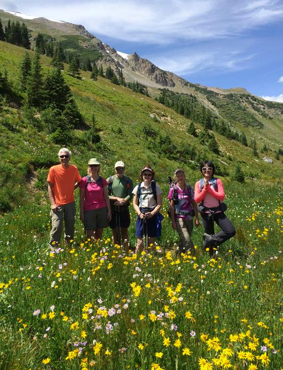
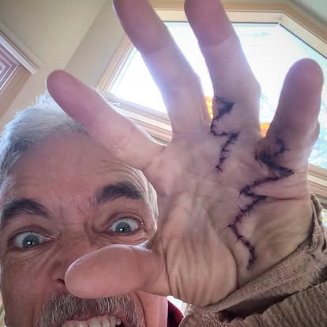
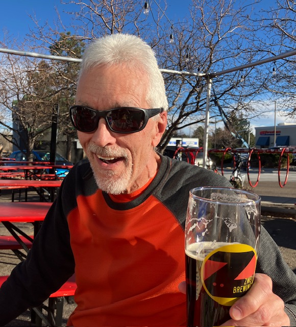

About Gary
Gary is currently in his 70s and still hikes and summits mountains as recently as this year (2025). During his hiking adventures he has discovered many beautiful vistas and views of other mountain peaks from across the way. He has also met many other hikers and made many friends.Gary has many hiking buddies who have shared in his adventures. Gary manages about 3 hikes per week during the warmer months in Colorado (typically April thru October) and about 1 snowshoe hike per week during the colder months (typically November thru March). So it helps to have friends to share the experience with since he goes on so many hikes! |
Throughout Gary's hiking adventures, he has had a few bumps and bruises especially after he was diagnosed with a non-cancerous tumor which is wrapped around one of his ear canals but it would be far too risky to remove thus causing issues with balance as well as his hearing. This has made some rock climbing adventures more dangerous and has resulted in a few injuries. Gary has had Talus go into his forehead. He's had lacerations on his hands. A miriad of bumps and bruises. But none of these have stopped him from continuing to hike and explore both new and old trails.Gary usually enjoys a well-deserved good fresh brew at a local microbrewery with his hiking friends after a long hike. |
-
Gary is originally from southern California but has resided in Colorado (primarily Fort Collins) for over 30 years. He has been retired since his early 50s and decided to take up rock climbing and hiking. He is an avid hiker and has been for decades. Gary is currently in his 70s and still hikes and summits mountains as recently as this year (2025). During his hiking adventures he has discovered many beautiful vistas and views of other mountain peaks from across the way. He has also met many other hikers and made many friends.
Gary has many hiking buddies who have shared in his adventures. Gary manages about 3 hikes per week during the warmer months in Colorado (typically April thru October) and about 1 snowshoe hike per week during the colder months (typically November thru March). So it helps to have friends to share the experience with since he goes on so many hikes!
-
Throughout Gary's hiking adventures, he has had a few bumps and bruises especially after he was diagnosed with a non-cancerous tumor which is wrapped around one of his ear canals but it would be far too risky to remove thus causing issues with balance as well as his hearing. This has made some rock climbing adventures more dangerous and has resulted in a few injuries. Gary has had Talus go into his forehead. He's had lacerations on his hands. A miriad of bumps and bruises. But none of these have stopped him from continuing to hike and explore both new and old trails.
Gary usually enjoys a well-deserved good fresh brew at a local microbrewery with his hiking friends after a long hike.